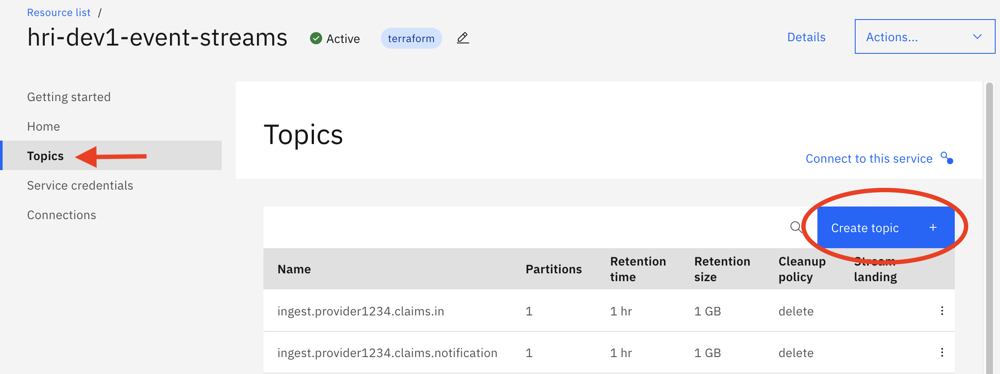

HRI Administration¶
HRI Administration tasks include:
Managing Tenants¶
Every Tenant has a separate index in Elasticsearch. Indexes are named <tenantId>-batches. For example, if the tenant ID is 24, the new index name will be 24-batches. Some solutions may include a tenant prefix, e.g. tenant24-batches. The tenant ID may contain any lowercase alphanumeric strings, -, and _. Whatever pattern you use, this will determine the tenant ID path parameter required in most of the Management API endpoints, and will need to be communicated to Data Integrators for that tenant. If you are using an existing deployment, check with team managing the instance on naming conventions.
There are four Management API endpoints that support Tenant management in Elasticsearch for HRI: Create, Get (all tenants), Get (specific tenant) and Delete. Please note that all four of these endpoints require IAM authentication - you will need to pass in an IAM Bearer token as part of the authorization header in the requests.
Create Tenant¶
Use the Management API Create Tenant endpoint to create new Tenants. This will create a new index for the Tenant in Elasticsearch. The Create Tenant endpoint takes in one path parameter tenantId, which may only contain lowercase alphanumeric characters, -, and _. For example, for the tenantId “24” you would use the following curl command:
curl -X POST \
<hri_base_url>/tenants/24 \
-H 'Accept: application/json' \
-H 'Authorization: Bearer <token>' \
-H 'Content-Type: application/json'
Get Tenants¶
The Get endpoint takes in no parameters and returns a list of all tenantIds that have an Elastic index. Assuming the above Create was run, then the following cURL command (HTTP/Get operation) would return a list containing the single tenantId “24”:
curl -X GET \
<hri_base_url>/tenants \
-H 'Accept: application/json' \
-H 'Authorization: Bearer <token>' \
-H 'Content-Type: application/json'
Get Tenant¶
The GetTenant endpoint can also take in a tenantId and will return a list of information on the associated index. Assuming the above Create was run, then the following cURL command (HTTP/Get operation) would return a list of information on the index for “24”:
curl -X GET \
<hri_base_url>/tenants/24 \
-H 'Accept: application/json' \
-H 'Authorization: Bearer <token>' \
-H 'Content-Type: application/json'
Delete Tenant¶
Like Create, the Delete Tenant endpoint takes in tenantId. The following curl command will delete the elastic index for 24:
curl -X DELETE \
<hri_base_url>/tenants/24 \
-H 'Accept: application/json' \
-H 'Authorization: Bearer <token>' \
-H 'Content-Type: application/json'
Onboarding New Data Integrators¶
Every unique combination of Tenant and Data Integrator must have a separate ‘stream’, path of data through the HRI, in order to satisfy HIPAA data isolation requirements. See Multi-tenancy for more details. Every stream includes two topics, and they can be added manually through the Event Streams UI and API or automatically through the Management API.
Topic Naming Conventions:¶
Please note that HRI uses the following naming conventions for topics:
ingest.<tenantId>.<dataIntegratorId>[.metadataTag].iningest.<tenantId>.<dataIntegratorId>[.metadataTag].notification
The metadataTag is an optional field that can be set to any user defined value. For example, with tenant id 24, Data Integrator id data-int-1, and metadata tag claims, the topics would be:
ingest.24.data-int-1.claims.iningest.24.data-int-1.claims.notification
The tenant ID must be consistent with the Elasticsearch index tenant ID. Only use lowercase alphanumeric characters, -, and _.
Topic Sizing Recommendations¶
Topic sizing mainly consists of the number of partitions and the retention policy (time and amount of data), and mainly depends on three factors:
- the size of batches
- the frequency of batches
- the throughput of Data Consumers
The number of partitions determines how many Data Consumer processes can read and process the data in parallel, with one process per partition. The retention policy determines how much data the topic will store before removing it due to time or size constraints. The throughput of Data Consumers is mainly dependent on what is done with the data after reading it. At a minimum, the Data Consumers must be faster than the long term rate of incoming data. Otherwise, data may be removed from the topic before it is consumed, resulting in data loss. For example, if a 10 GB batch is written by Data Integrators every 4 hours, the Data Consumers must have a process rate greater than 2.5 GBs per hour. Otherwise, they will continually fall behind and eventually not process some data before it is removed from the topic.
For initial sizing, estimate the peak data load size (could include multiple batches depending on your solution) and divide by 1 GB (compressed) to get the number of partitions. For example, if the peak data load is 10 GBs, then start with 10 partitions. Also set the retention size to 10 GBs. In production environments, the retention time is typically 3-7 days. With longer times, you may need to also increase the retention size.
As the frequency and size of data loads increase, the number of partitions and retention policy should also increase. As the throughput of Data Consumers increases, the number of partitions and retention policy should decrease.
NOTE: if creating topics manually, only 1 partition is needed for the *.notification topic.
Manually through the Event Streams UI¶
Create the required Kafka topics described above using the IBM Cloud Event Streams UI.
Create the new Topic¶
To Create the new topics, in your IBM Cloud account navigate to your Event Streams service. Click on the Topics tab/link on the left of your screen. Next, click on the “Create Topic” button on the upper right-hand side of the screen: 
Enter your topic name, as defined by the naming conventions above, the number of partitions, and the retention time. Note that you must toggle Show all available options to see the partition and retention policy options.
Using the Management API stream endpoints¶
There are three Management API Stream endpoints: Create, Get, and Delete. Please note that all three of these endpoints require IAM authentication - you will need to pass in an IAM Bearer token as part of the authorization header in the requests.
In the case of Create and Delete, the IAM bearer token must be associated with a user who has Manager role permissions. For Get, the bearer token must be associated with a user who has at least Reader role permissions. See Event Streams documentation for details on permissions.
Create Stream¶
Instead of manually creating the topics for the Tenant and Data Integrator pairing, you may choose to use the Management API Create Stream endpoint which will create the topics for you, and take into account if validation is enabled.
The Create Stream endpoint takes in two path parameters, tenantId and streamId, where streamId is made up of the Data Integrator ID and an optional qualifier, delimited by ‘.’. Both tenantId and streamdId may only contain lowercase alphanumeric characters, -, and _. streamdId may also contain one ‘.’. For example, for the tenantId “tenant24”, Data Integrator ID “data-int-1” and optional qualifier “qualifier1”, you could use the following curl command:
curl -X POST \
<hri_base_url>/tenants/tenant24/streams/data-int-1.qualifier1 \
-H 'Accept: application/json' \
-H 'Authorization: Bearer <token>' \
-H 'Content-Type: application/json' \
-d '{
"numPartitions":1,
"retentionMs":86400000
}'
This will create the following topics:
ingest.tenant24.data-int-1.qualifier1.iningest.tenant24.data-int-1.qualifier1.notification
Note:
numPartitionsandretentionMstopic configurations are required. There are other optional configurations that can also be passed in, see the Stream Api Spec for more details on these optional fields.- The
numPartitionsparameter is applied to the*.intopic, but the*.notificationtopic is set to 1.
Get Streams¶
The Get Streams endpoint takes in tenantId as a path parameter, and returns a list of all streamId‘s associated with that tenant. Assuming the above Create was run, then the following cURL command (HTTP/Get operation) would return a list containing the single streamId data-int-1.qualifier1:
curl -X GET \
<hri_base_url>/tenants/tenant24/streams \
-H 'Accept: application/json' \
-H 'Authorization: Bearer <token>' \
-H 'Content-Type: application/json'
Delete Stream¶
Like Create, the Delete Stream endpoint takes in two path parameters, tenantId and streamId. The following curl command will delete both the ingest.tenant24.data-int-1.qualifier1.in and ingest.tenant24.data-int-1.qualifier1.notification topics:
curl -X DELETE \
<hri_base_url>/tenants/tenant24/streams/data-int-1.qualifier1 \
-H 'Accept: application/json' \
-H 'Authorization: Bearer <token>' \
-H 'Content-Type: application/json'
Note that HRI topic naming conventions require topics to start with the prefix “ingest” and end with the suffix “in” or “notification”. Both the Get and Delete endpoints will ignore any topics that don’t follow this convention.
Creating Service Credentials for Kafka Permissions¶
You have to create an Event Streams (Kafka) Service Credential for every client that will need to read from or write to one or more topics. Typically, every Data Integrator and downstream Data Consumer will need their own service credential. A service credential can be configured with IAM policies to just grant read and or write access to specific topics and consumer groups, so only one service credential is needed for each entity. You do not need to create a service credential for every topic.
Each service credential will initially have read or write access to all topics when created depending on whether the ‘Reader’ or ‘Writer’ role is selected respectively. But they can be configured with IAM policies to just grant read and or write access to specific topics and consumer groups regardless of which role is selected. It’s good practice to select ‘Writer’ for Data Integrators and ‘Reader’ for downstream consumers.
To create a service credential, navigate to the Event Streams - Service Credentials page, and then click on the “New Credential” button on the right-hand side of your screen:

You can see in the Screenshot below an example of creating a Data Integrator service credential with the Writer role:

Next, go to the IBM Cloud (Access) IAM Management tools to further restrict the service credential, by using the “Manage” drop-down menu at the top of your screen and choosing ‘Access (IAM)’. Then select ‘Service IDs’ from the left menu.
Next select the Service ID for the credential you created. If you selected ‘Auto Generate’ when creating the credential, it will have the same name, but be careful, because there can be multiple Service IDs with the same name. After selecting the Service ID, go to the ‘Access policies’ tab. You should see one policy that is created by default, which allows read or write access to all topics. To restrict access to particular topics, you have to modify the existing policy and create several new ones. Below are rules about what policies to create for specific access.
- Create a policy with ‘Reader’ service access and ‘Resource type’ set to
cluster. This will allow the Service ID to access the Event Streams brokers. - To allow read & write permissions to a particular topic, create a policy with ‘Reader’ and ‘Writer’ service access, ‘Resource type’ set to
topic, and ‘Resource ID’ set to the topic name. - To allow just read permissions to a particular topic, create a policy with ‘Reader’ service access, ‘Resource type’ set to
topic, and ‘Resource ID’ set to the topic name. - To allow subscribing to topics, the Service ID must be given permissions to create consumer groups. This is the standard way of consuming messages from Kafka. Create a policy with ‘Reader’ service access, ‘Resource type’ set to
group, and ‘Resource ID’ set to a unique ID for this client followed by a*using ‘string matches’, e.g.data-int-1*. This allows the client to only create consumer groups that begin with this ID when connecting to Event Streams. This also prevents clients who are reading from the same topics from interfering with each other. - To allow the use of transactions when writing to topics, create a policy with ‘Writer’ service access and the ‘Resource type’ set to
txnid. We highly encourage the use of transactions for exactly-once write semantics. Duplicate messages will cause validation failures or problems for downstream consumers.
Note: policies support wildcards at the beginning and/or end of the ‘Resource ID’ field when using the ‘string matches’ qualifier. This enables a single policy to allow access to multiple topics when they share a common substring. For example, ingest.24.data-int-1.* could be used to allow access to the ingest.24.data-int-1.in and ingest.24.data-int-1.notification topics.
The Data Integrator will need read & write access to the input topic, but only read access to the notification topic. This requires five IAM policies total. Below is an example.
A downstream consumer will need just read access to the input and notification topics. This requires three IAM policies total. Below is an example.
More detailed documentation on how to configure IAM policies for Event Streams can be found here.
HRI Management User Authorization¶
In your authorization service, create a new scope for this tenant and assign it to the Data Integrators and Consumers that need access. See Authorization for more details.
If you are using the IBM App ID Service, please see Authorization - “Adding Data Integrators and Consumers”.